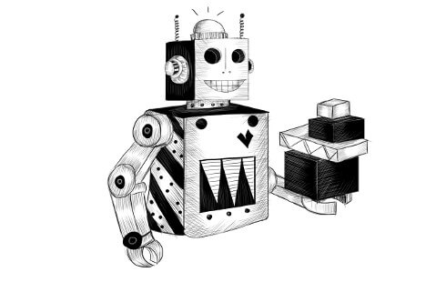
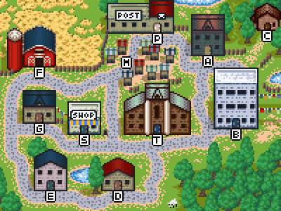

الفصل 07
مشروع: روبوت
مسألة ما إذا كانت الآلات تستطيع التفكير [...] لا تزيد صلتها بالموضوع عن مسألة ما إذا كانت الغواصات تستطيع السباحة.
— إدسخر دايكسترا، التهديدات التي تواجه علم الحوسبة

في فصول «المشروع»، سأتوقف لحظة وجيزة عن إغراقك بالنظريات الجديدة، وسنعمل بدلًا من ذلك على برنامج معًا. النظرية ضرورية لتعلّم البرمجة، لكن قراءة البرامج الفعلية وفهمها لا تقل أهمية.
مشروعنا في هذا الفصل هو بناء إنسان آلي (automaton)، برنامج صغير ينفّذ مهمة في عالم افتراضي. سيكون إنساننا الآلي روبوتًا لتوصيل البريد يلتقط الطرود ويسلّمها.
ميدوفيلد
قرية ميدوفيلد ليست كبيرة جدًا. تتكوّن من 11 مكانًا يصل بينها 14 طريقًا. ويمكن وصفها بمصفوفة الطرق هذه:
const roads = [
"Alice's House-Bob's House", "Alice's House-Cabin",
"Alice's House-Post Office", "Bob's House-Town Hall",
"Daria's House-Ernie's House", "Daria's House-Town Hall",
"Ernie's House-Grete's House", "Grete's House-Farm",
"Grete's House-Shop", "Marketplace-Farm",
"Marketplace-Post Office", "Marketplace-Shop",
"Marketplace-Town Hall", "Shop-Town Hall"
];

تشكّل شبكة الطرق في القرية رسمًا بيانيًا (graph). والرسم البياني مجموعة من النقاط (أماكن القرية) تصل بينها خطوط (الطرق). سيكون هذا الرسم البياني هو العالم الذي يتحرّك فيه روبوتنا.
التعامل مع مصفوفة النصوص ليس سهلًا. ما يهمّنا هو الوجهات التي يمكن الوصول إليها انطلاقًا من مكان معيّن. لنحوّل قائمة الطرق إلى بنية بيانات تخبرنا، لكل مكان، بما يمكن الوصول إليه منه.
function buildGraph(edges) {
let graph = Object.create(null);
function addEdge(from, to) {
if (from in graph) {
graph[from].push(to);
} else {
graph[from] = [to];
}
}
for (let [from, to] of edges.map(r => r.split("-"))) {
addEdge(from, to);
addEdge(to, from);
}
return graph;
}
const roadGraph = buildGraph(roads);
عند إعطاء مصفوفة من الحواف (edges)، ينشئ buildGraph كائن خريطة يخزّن، لكل عقدة، مصفوفة بالعقد المتصلة بها. ويستخدم طريقة split للانتقال من نصوص الطرق—التي لها الصيغة "Start-End")—إلى مصفوفات من عنصرين تحتوي على البداية والنهاية كنصّين منفصلين.
المهمة
سيتنقّل روبوتنا في أرجاء القرية. توجد طرود في أماكن مختلفة، وكل طرد موجَّه إلى مكان آخر. يلتقط الروبوت الطرود عندما يصادفها، ويسلّمها عندما يصل إلى وجهاتها.
على الإنسان الآلي أن يقرّر، في كل لحظة، إلى أين يتّجه بعد ذلك. ويكون قد أنجز مهمته عندما تُسلَّم جميع الطرود.
لتتمكّن من محاكاة هذه العملية، علينا تعريف عالم افتراضي يصفها. يخبرنا هذا النموذج بمكان الروبوت وأماكن الطرود. وعندما يقرّر الروبوت التحرّك إلى مكان ما، نحتاج إلى تحديث النموذج ليعكس الوضع الجديد.
إذا كنت تفكّر بأسلوب البرمجة الكائنية التوجه (object-oriented programming)، فقد تكون رغبتك الأولى أن تبدأ بتعريف كائنات لعناصر العالم المختلفة: صنف للروبوت، وصنف للطرد، وربما صنف للأماكن. ويمكن لهذه بعد ذلك أن تحمل خصائص تصف حالتها الراهنة، مثل كومة الطرود في موقع ما، والتي يمكننا تغييرها عند تحديث العالم.
هذا خطأ. أو على الأقل، هو كذلك عادةً. فكون شيء ما يبدو كائنًا لا يعني تلقائيًا أنه ينبغي أن يكون كائنًا في برنامجك. إن كتابة أصناف بشكل انعكاسي لكل مفهوم في تطبيقك كثيرًا ما تتركك أمام مجموعة من الكائنات المترابطة، لكل منها حالتها الداخلية المتغيّرة. ومثل هذه البرامج يصعب فهمها غالبًا، ومن ثم يسهل كسرها.
لنجمع بدلًا من ذلك حالة القرية في مجموعة القيم الدنيا التي تعرّفها. هناك موقع الروبوت الحالي، ومجموعة الطرود غير المسلَّمة، ولكل منها موقع حالي وعنوان وجهة. هذا كل شيء.
وبالمناسبة، لنجعل الأمر بحيث لا نغيّر هذه الحالة عندما يتحرّك الروبوت، بل نحسب حالة جديدة للوضع بعد الحركة.
class VillageState {
constructor(place, parcels) {
this.place = place;
this.parcels = parcels;
}
move(destination) {
if (!roadGraph[this.place].includes(destination)) {
return this;
} else {
let parcels = this.parcels.map(p => {
if (p.place != this.place) return p;
return {place: destination, address: p.address};
}).filter(p => p.place != p.address);
return new VillageState(destination, parcels);
}
}
}
طريقة move هي حيث يحدث الفعل. تتحقق أولًا مما إذا كان هناك طريق يمتدّ من المكان الحالي إلى الوجهة، وإن لم يوجد، تعيد الحالة القديمة، لأن هذه حركة غير صالحة.
بعد ذلك، تنشئ الطريقة حالة جديدة تكون فيها الوجهة موقع الروبوت الجديد. وتحتاج أيضًا إلى إنشاء مجموعة جديدة من الطرود—فالطرود التي يحملها الروبوت (أي الموجودة في موقعه الحالي) يجب أن تنتقل معه إلى المكان الجديد. أما الطرود الموجّهة إلى المكان الجديد فينبغي تسليمها—أي يجب إزالتها من مجموعة الطرود غير المسلَّمة. يتولّى النداء إلى map أمر النقل، ويتولّى النداء إلى filter أمر التسليم.
لا تُغيَّر كائنات الطرود عند نقلها، بل يُعاد إنشاؤها. تمنحنا طريقة move حالة قرية جديدة، لكنها تترك الحالة القديمة سليمة تمامًا.
let first = new VillageState(
"Post Office",
[{place: "Post Office", address: "Alice's House"}]
);
let next = first.move("Alice's House");
console.log(next.place);
// → Alice's House
console.log(next.parcels);
// → []
console.log(first.place);
// → Post Office
تؤدي الحركة إلى تسليم الطرد، وهو ما ينعكس في الحالة التالية. لكن الحالة الأولى ما تزال تصف الوضع الذي يكون فيه الروبوت في مكتب البريد والطرد غير مسلَّم.
بيانات دائمة
تسمى بنى البيانات التي لا تتغيّر غير قابلة للتغيير (immutable) أو دائمة (persistent). وهي تتصرّف مثل النصوص والأعداد إلى حد كبير، إذ تبقى كما هي ولا تحتوي أشياء مختلفة في أزمنة مختلفة.
في JavaScript، يمكن تغيير كل شيء تقريبًا، لذا يتطلب العمل بقيم يُفترض أنها دائمة بعض ضبط النفس. هناك دالة تسمى Object.freeze تغيّر كائنًا بحيث تُهمَل أي كتابة في خصائصه. يمكنك استخدامها للتأكد من عدم تغيّر كائناتك، إن أردت توخّي الحذر. لكن التجميد يتطلب من الحاسوب بذل جهد إضافي، كما أن تجاهل التحديثات قد يربك المرء بقدر ما يربكه تنفيذها على نحو خاطئ. ويفضّل عادةً أن أخبر الناس ببساطة أن كائنًا معيّنًا لا ينبغي العبث به، وآمل أن يتذكّروا ذلك.
let object = Object.freeze({value: 5});
object.value = 10;
console.log(object.value);
// → 5
لماذا أتكبّد عناء عدم تغيير الكائنات بينما اللغة من الواضح أنها تتوقّع مني ذلك؟ لأن ذلك يساعدني على فهم برامجي. الأمر يتعلق بإدارة التعقيد مرة أخرى. فعندما تكون الكائنات في نظامي أشياء ثابتة مستقرّة، يمكنني أن أنظر في العمليات عليها بمعزل عن غيرها—فالانتقال إلى منزل أليس من حالة بداية معيّنة ينتج دائمًا الحالة الجديدة نفسها. أما عندما تتغيّر الكائنات بمرور الوقت، فإن ذلك يضيف بُعدًا جديدًا كاملًا من التعقيد إلى هذا النوع من التفكير.
في نظام صغير مثل الذي نبنيه في هذا الفصل، يمكننا تحمّل ذلك القدر الإضافي من التعقيد. لكن أهم حدّ يحكم نوع الأنظمة التي يمكننا بناؤها هو مقدار ما نستطيع فهمه. فأي شيء يجعل شيفرتك أسهل فهمًا يجعل من الممكن بناء نظام أكثر طموحًا.
لسوء الحظ، ورغم أن فهم نظام مبني على بنى بيانات دائمة أسهل، فإن تصميم واحد منها، خصوصًا حين لا تساعدك لغة البرمجة، قد يكون أصعب قليلًا. سنبحث عن فرص لاستخدام بنى بيانات دائمة في هذا الكتاب، لكننا سنستخدم أيضًا بنى قابلة للتغيير.
المحاكاة
ينظر روبوت التوصيل إلى العالم ويقرّر الاتجاه الذي يريد التحرّك فيه. لذا يمكننا القول إن الروبوت دالة تأخذ كائن VillageState وتعيد اسم مكان قريب.
ولأننا نريد أن تكون الروبوتات قادرة على تذكّر الأشياء حتى تتمكّن من وضع الخطط وتنفيذها، فإننا نمرّر لها أيضًا ذاكرتها ونسمح لها بإرجاع ذاكرة جديدة. وبالتالي، فما يعيده الروبوت كائن يحتوي على الاتجاه الذي يريد التحرّك فيه وعلى قيمة ذاكرة ستُعطى له مرة أخرى في المرة التالية التي يُستدعى فيها.
function runRobot(state, robot, memory) {
for (let turn = 0;; turn++) {
if (state.parcels.length == 0) {
console.log(`Done in ${turn} turns`);
break;
}
let action = robot(state, memory);
state = state.move(action.direction);
memory = action.memory;
console.log(`Moved to ${action.direction}`);
}
}
فكّر فيما يجب على الروبوت فعله كي «يحلّ» حالة معيّنة. عليه أن يلتقط كل الطرود بزيارة كل موقع فيه طرد، وأن يسلّمها بزيارة كل موقع موجَّه إليه طرد، لكن فقط بعد التقاط الطرد.
ما أبله استراتيجية يمكن أن تنجح فعلًا؟ يمكن للروبوت أن يسير ببساطة في اتجاه عشوائي في كل دور. وهذا يعني، على الأرجح، أنه سيصادف في النهاية كل الطرود، ثم يصل في وقت ما إلى المكان الذي ينبغي تسليمها فيه.
إليك كيف قد يبدو ذلك:
function randomPick(array) {
let choice = Math.floor(Math.random() * array.length);
return array[choice];
}
function randomRobot(state) {
return {direction: randomPick(roadGraph[state.place])};
}
تذكّر أن Math.random() يعيد عددًا بين 0 و1—لكنه يظل دائمًا أقل من 1. وضرب عدد كهذا في طول مصفوفة ثم تطبيق Math.floor عليه يعطينا فهرسًا عشوائيًا للمصفوفة.
ولأن هذا الروبوت لا يحتاج إلى تذكّر أي شيء، فإنه يتجاهل معطاه الثاني (تذكّر أن دوال JavaScript يمكن استدعاؤها بمعطيات إضافية دون أثر سيئ) ويحذف خاصية memory من الكائن الذي يعيده.
لتشغيل هذا الروبوت المتطوّر، سنحتاج أولًا إلى طريقة لإنشاء حالة جديدة مع بعض الطرود. والطريقة الساكنة (static method)—المكتوبة هنا بإضافة خاصية مباشرة إلى الباني—مكان جيد لوضع هذه الوظيفة.
VillageState.random = function(parcelCount = 5) {
let parcels = [];
for (let i = 0; i < parcelCount; i++) {
let address = randomPick(Object.keys(roadGraph));
let place;
do {
place = randomPick(Object.keys(roadGraph));
} while (place == address);
parcels.push({place, address});
}
return new VillageState("Post Office", parcels);
};
لا نريد أن يُرسَل أي طرد من المكان نفسه الموجَّه إليه. لهذا السبب، تواصل حلقة do اختيار أماكن جديدة كلما حصلت على مكان يساوي عنوان الوجهة.
لنشغّل عالمًا افتراضيًا.
runRobot(VillageState.random(), randomRobot);
// → Moved to Marketplace
// → Moved to Town Hall
// → …
// → Done in 63 turns
يستغرق الروبوت أدوارًا كثيرة لتسليم الطرود لأنه لا يخطّط للمستقبل جيدًا. سنعالج ذلك قريبًا.
لرؤية أكثر متعة للمحاكاة، يمكنك استخدام دالة runRobotAnimation المتاحة في بيئة البرمجة الخاصة بهذا الفصل. فهي تشغّل المحاكاة، لكنها بدلًا من إخراج نص، تعرض لك الروبوت وهو يتحرّك في خريطة القرية.
runRobotAnimation(VillageState.random(), randomRobot);
ستبقى طريقة تنفيذ runRobotAnimation لغزًا في الوقت الحالي، لكن بعد أن تقرأ الفصول اللاحقة من هذا الكتاب، التي تناقش دمج JavaScript في متصفحات الويب، ستصبح قادرًا على تخمين كيفية عملها.
مسار شاحنة البريد
ينبغي أن نكون قادرين على تحقيق نتيجة أفضل بكثير من الروبوت العشوائي. ومن التحسينات السهلة أن نستلهم فكرة من طريقة عمل توصيل البريد في الواقع. فإذا وجدنا مسارًا يمرّ بكل أماكن القرية، أمكن للروبوت أن يسلك ذلك المسار مرتين، وعندها يكون إنجاز المهمة مضمونًا. إليك أحد هذه المسارات (بدءًا من مكتب البريد):
const mailRoute = [
"Alice's House", "Cabin", "Alice's House", "Bob's House",
"Town Hall", "Daria's House", "Ernie's House",
"Grete's House", "Shop", "Grete's House", "Farm",
"Marketplace", "Post Office"
];
لتنفيذ روبوت متّبع المسار، سنحتاج إلى استخدام ذاكرة الروبوت. يحتفظ الروبوت بما تبقّى من مساره في ذاكرته، ويحذف العنصر الأول في كل دور.
function routeRobot(state, memory) {
if (memory.length == 0) {
memory = mailRoute;
}
return {direction: memory[0], memory: memory.slice(1)};
}
هذا الروبوت أسرع بكثير بالفعل. سيستغرق 26 دورًا كحد أقصى (ضعف المسار المكوّن من 13 خطوة)، لكنه عادةً يستغرق أقل من ذلك.
runRobotAnimation(VillageState.random(), routeRobot, []);
إيجاد المسارات
ومع ذلك، لن أسمّي اتباع مسار ثابت عن عمى سلوكًا ذكيًا حقًا. ويمكن للروبوت أن يعمل بكفاءة أكبر لو كيّف سلوكه مع العمل الفعلي المطلوب إنجازه.
وليفعل ذلك، يجب أن يكون قادرًا على التحرّك عن قصد نحو طرد معيّن أو نحو الموقع الذي ينبغي تسليم طرد فيه. وهذا يتطلب نوعًا من دوال إيجاد المسارات، حتى عندما يكون الهدف أبعد من حركة واحدة.
مشكلة إيجاد مسار عبر رسم بياني هي مشكلة بحث نمطية (search problem). يمكننا أن نقول ما إذا كان حلّ معيّن (مسار ما) صالحًا، لكننا لا نستطيع حساب الحل مباشرة كما نفعل مع 2 + 2. علينا بدلًا من ذلك مواصلة إنشاء حلول محتملة حتى نجد حلًا ينجح.
عدد المسارات الممكنة عبر رسم بياني لا نهائي. لكننا عند البحث عن مسار من A إلى B، لا تهمّنا إلا المسارات التي تبدأ من A. ولا يهمّنا أيضًا المسارات التي تزور المكان نفسه مرتين—فهي بالتأكيد ليست المسار الأكثر كفاءة في أي مكان. وهذا يقلّص عدد المسارات التي على باحث المسارات أن ينظر فيها.
في الواقع، ولأننا مهتمون أساسًا بـأقصر مسار، نريد أن نحرص على النظر في المسارات القصيرة قبل الطويلة. ومن الأساليب الجيدة أن «ننمّي» المسارات انطلاقًا من نقطة البداية، مستكشفين كل مكان يمكن الوصول إليه ولم يُزَر بعد، حتى يصل مسار إلى الهدف. وبهذه الطريقة لن نستكشف إلا المسارات المثيرة للاهتمام، ونعلم أن أول مسار نجده هو أقصر مسار (أو أحد أقصر المسارات، إن وُجد أكثر من مسار واحد).
إليك دالة تفعل ذلك:
function findRoute(graph, from, to) {
let work = [{at: from, route: []}];
for (let i = 0; i < work.length; i++) {
let {at, route} = work[i];
for (let place of graph[at]) {
if (place == to) return route.concat(place);
if (!work.some(w => w.at == place)) {
work.push({at: place, route: route.concat(place)});
}
}
}
}
يجب أن يجري الاستكشاف بالترتيب الصحيح—فالأماكن التي وُصل إليها أولًا يجب أن تُستكشف أولًا. ولا يمكننا استكشاف مكان فور الوصول إليه، لأن ذلك يعني أن الأماكن التي نصل إليها من هناك ستُستكشف هي أيضًا فورًا، وهكذا دواليك، مع أنه قد تكون هناك مسارات أخرى أقصر لم تُستكشف بعد.
لذلك تحتفظ الدالة بـقائمة عمل (work list). وهي مصفوفة بالأماكن التي ينبغي استكشافها تاليًا، مع المسار الذي أوصلنا إليها. وتبدأ بموضع البداية وحده ومسار فارغ.
يعمل البحث بعد ذلك بأخذ العنصر التالي في القائمة واستكشافه، أي أنه ينظر في كل الطرق الخارجة من ذلك المكان. فإن كان أحدها هو الهدف، أمكن إرجاع مسار مكتمل. وإلا، فإن لم نكن قد نظرنا في هذا المكان من قبل، يُضاف عنصر جديد إلى القائمة. أما إن كنا قد نظرنا فيه سابقًا، فلأننا ننظر في المسارات القصيرة أولًا، نكون قد وجدنا إما مسارًا أطول إلى ذلك المكان أو مسارًا بنفس طول الموجود تمامًا، فلا حاجة إلى استكشافه.
يمكنك تصوّر ذلك كشبكة من المسارات المعروفة تزحف خارجًا من موقع البداية، وتنمو بالتساوي في كل الاتجاهات (من دون أن تتشابك مع نفسها أبدًا). وبمجرد أن يصل أول خيط إلى موقع الهدف، يُتتبَّع ذلك الخيط رجوعًا إلى البداية، فنحصل على مسارنا.
لا تتعامل شيفرتنا مع حالة نفاد عناصر العمل من قائمة العمل، لأننا نعلم أن رسمنا البياني متصل (connected)، أي أنه يمكن الوصول إلى كل موقع من جميع المواقع الأخرى. سنكون دائمًا قادرين على إيجاد مسار بين نقطتين، ولا يمكن أن يفشل البحث.
function goalOrientedRobot({place, parcels}, route) {
if (route.length == 0) {
let parcel = parcels[0];
if (parcel.place != place) {
route = findRoute(roadGraph, place, parcel.place);
} else {
route = findRoute(roadGraph, place, parcel.address);
}
}
return {direction: route[0], memory: route.slice(1)};
}
يستخدم هذا الروبوت قيمة ذاكرته كقائمة بالاتجاهات التي يتحرك فيها، تمامًا مثل روبوت متّبع المسار. وكلما فرغت تلك القائمة، كان عليه أن يحدّد ما سيفعله بعد ذلك. يأخذ أول طرد غير مسلَّم في المجموعة، فإن لم يكن ذلك الطرد قد التُقط بعد، رسم مسارًا نحوه. وإن كان الطرد قد التُقط، فهو ما يزال بحاجة إلى تسليم، فينشئ الروبوت بدلًا من ذلك مسارًا نحو عنوان التسليم.
لنرَ كيف يبلو.
runRobotAnimation(VillageState.random(),
goalOrientedRobot, []);
ينهي هذا الروبوت عادةً مهمة تسليم 5 طرود في نحو 16 دورًا. وهذا أفضل قليلًا من routeRobot لكنه ما يزال بالتأكيد غير مثالي. سنواصل تحسينه في التمارين.
التمارين
قياس أداء روبوت
من الصعب المقارنة الموضوعية بين الروبوتات بمجرد تركها تحلّ بضعة سيناريوهات. فقد يصادف أن يحصل أحد الروبوتين على مهام أسهل أو من النوع الذي يجيده، بينما لا يحصل الآخر على ذلك.
اكتب دالة compareRobots تأخذ روبوتين (وذاكرتهما الابتدائية). ينبغي أن تولّد 100 مهمة وتدع كلا الروبوتين يحلّ كل واحدة من هذه المهام. وعند الانتهاء، ينبغي أن تُخرج متوسط عدد الخطوات التي استغرقها كل روبوت لكل مهمة.
ومن أجل العدالة، احرص على إعطاء كل مهمة لكلا الروبوتين، بدلًا من توليد مهام مختلفة لكل روبوت.
function compareRobots(robot1, memory1, robot2, memory2) {
// اكتب شيفرتك هنا
}
compareRobots(routeRobot, [], goalOrientedRobot, []);
إظهار التلميح
سيكون عليك كتابة نسخة مختلفة من دالة runRobot، تعيد عدد الخطوات التي استغرقها الروبوت لإنجاز المهمة، بدلًا من تسجيل الأحداث في الطرفية.
يمكن لدالة القياس عندك بعد ذلك أن تولّد، في حلقة، حالات جديدة وتعدّ الخطوات التي يستغرقها كل روبوت. وعندما تجمع قياسات كافية، يمكنها استخدام console.log لإخراج المتوسط لكل روبوت، وهو إجمالي عدد الخطوات مقسومًا على عدد القياسات.
كفاءة الروبوت
هل يمكنك كتابة روبوت ينهي مهمة التوصيل أسرع من goalOrientedRobot؟ إذا راقبت سلوك ذلك الروبوت، فما الأشياء البلهاء الواضحة التي يفعلها؟ وكيف يمكن تحسينها؟
إذا كنت قد حللت التمرين السابق، فقد ترغب في استخدام دالة compareRobots للتحقق مما إذا كنت قد حسّنت الروبوت.
// اكتب شيفرتك هنا
runRobotAnimation(VillageState.random(), yourRobot, memory);
إظهار التلميح
القيود الرئيسي في goalOrientedRobot أنه ينظر في طرد واحد فقط في كل مرة. وسيسير كثيرًا ذهابًا وإيابًا عبر القرية لأن الطرد الذي ينظر فيه مصادفةً يقع في الجهة الأخرى من الخريطة، حتى لو كانت هناك طرود أخرى أقرب بكثير.
أحد الحلول الممكنة أن تحسب المسارات لجميع الطرود ثم تسلك الأقصر منها. ويمكن الحصول على نتائج أفضل، إذا وُجدت عدة مسارات قصيرة، بتفضيل المسارات التي تذهب لالتقاط طرد بدلًا من تسليم طرد.
مجموعة دائمة
معظم بنى البيانات المتاحة في بيئة JavaScript القياسية ليست مناسبة كثيرًا للاستخدام الدائم. فالمصفوفات لها طريقتا slice وconcat، اللتان تتيحان لنا إنشاء مصفوفات جديدة بسهولة دون الإضرار بالقديمة. لكن Set مثلًا ليس له طرق لإنشاء مجموعة جديدة بعنصر مضاف أو محذوف.
اكتب صنفًا جديدًا PGroup، شبيهًا بصنف Group من الفصل 6، يخزّن مجموعة من القيم. ومثل Group، له طرق add وdelete وhas. غير أن طريقة add فيه ينبغي أن تعيد نسخة جديدة من PGroup مع العضو المضاف، وتترك النسخة القديمة دون تغيير. وبالمثل، ينبغي أن تنشئ delete نسخة جديدة من دون عضو معيّن.
ينبغي أن يعمل الصنف مع قيم من أي نوع، وليس مع النصوص فقط. وليس من الضروري أن يكون فعّالًا عند استخدامه مع أعداد كبيرة من القيم.
لا ينبغي أن يكون الباني جزءًا من واجهة الصنف (وإن كنت بالتأكيد ستريد استخدامه داخليًا). بدلًا من ذلك، هناك نسخة فارغة، PGroup.empty، يمكن استخدامها كقيمة بداية.
لماذا تحتاج إلى قيمة PGroup.empty واحدة فقط بدلًا من وجود دالة تنشئ خريطة فارغة جديدة في كل مرة؟
class PGroup {
// اكتب شيفرتك هنا
}
let a = PGroup.empty.add("a");
let ab = a.add("b");
let b = ab.delete("a");
console.log(b.has("b"));
// → true
console.log(a.has("b"));
// → false
console.log(b.has("a"));
// → false
إظهار التلميح
لا تزال أسهل طريقة لتمثيل مجموعة قيم الأعضاء هي مصفوفة، لأن نسخ المصفوفات سهل.
عند إضافة قيمة إلى المجموعة، يمكنك إنشاء مجموعة جديدة بنسخة من المصفوفة الأصلية مضافًا إليها القيمة (باستخدام concat مثلًا). وعند حذف قيمة، تستبعدها من المصفوفة باستخدام filter.
يمكن لباني الصنف أن يأخذ مصفوفة كهذه كمعطى ويخزّنها كخاصية النسخة (الوحيدة). وهذه المصفوفة لا تُحدَّث أبدًا.
لإضافة خاصية empty إلى الباني، يمكنك تعريفها كخاصية ساكنة.
تحتاج إلى نسخة empty واحدة فقط لأن جميع المجموعات الفارغة متطابقة ولأن نسخ الصنف لا تتغيّر. ويمكنك إنشاء مجموعات مختلفة كثيرة انطلاقًا من تلك المجموعة الفارغة الواحدة دون التأثير عليها.